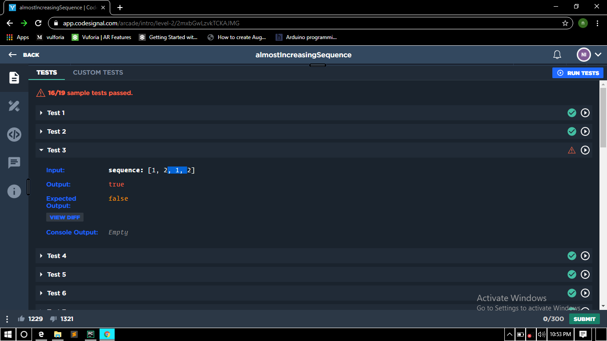

H2 heading 2
H2 Heading
Inline tags - Bold, Strong, underline , emphasized , italic, Word definition of the word, thirukural - citation , q tag is to qoute the statement
This is a block present inside block qoute tag used to qoute paragraph.
Dr. Sathya kumari, ISRO
Address tag - 19/c
inside paragharaph -anna nager
used line breaks -coimbatore
Edited content - deleted inserted stricked
H3 heading
- Html
- Hyper text markup language
- Css
- cascading style sheet
- Js
- Javascript
- Node.js
- frame work
h4 heading
| name | age |
|---|---|
| eesa | 20 |
| eesa | 20 |
| eesa | 20 |
| Total age | 60 |
| "1" | "2" | "3" | "4" | "5" | "6" | "7" | "8" | |
|---|---|---|---|---|---|---|---|---|
| "M" | ||||||||
| "T" | ||||||||
| "W" | ||||||||
| "T" | ||||||||
| "F" |
| day | periods | ||||||||||
|---|---|---|---|---|---|---|---|---|---|---|---|
| "1" | "2" | Recess | "3" | "4" | lunch | "5" | "6" | Recess | "7" | "8" | |
| "M" | |||||||||||
| "T" | |||||||||||
| "W" | |||||||||||
| "T" | |||||||||||
| "F" | |||||||||||
H5 heading
H6 heading
(a+b)2 superscript H2 subscriptO
H1 heading
H2 Heading
function jsexample(str)
{
alert(str)
}
function jsex2(str) { alert(str) }
H3 heading
facebookContactus
back to top
h4 heading
H5 heading
H6 heading
Even though space is there p starts in new line because h take entire line. block line elements takes full width.
but inline element takes only space they needed like italics does